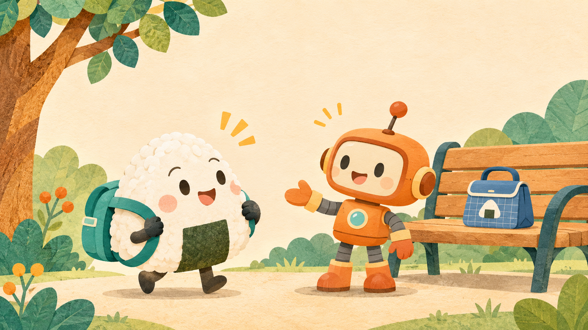

团子英语听说馆 · 功能示范
听一听，跟着说。
第一课 · 你好，小机器人 Hello, little robot!

准备好了吗？1 / 6
Hello, little robot!
点「开始听」，听完就轮到你说。
LISTEN & SPEAK
● ● ●一句一句，跟我说
👆 点句子，再听一次。听完留一点时间，大声跟读吧！
EXPLORE MORE · 外部资源
新概念英语 · 选择课程
选择册数和课次，前往第三方网站学习。
课程目录加载中
前往第三方学习 ↗第三方外部链接 · 内容、广告及可用性由对方提供；链接不代表本站获得教材或音频授权。将在新标签页打开。
📁 从本机选择材料
选择一份带时间轴的 SRT、VTT 字幕（或同格式 UTF-8 TXT）和一个音频文件（MP3、M4A、WAV 等，由浏览器解码）。字幕每条第一行为英文、第二行为可选中文；可用 角色名：英文 标注说话人。
材料只在本浏览器内读取和播放，不上传服务器。导入内容仅保存在本次页面中，刷新或关闭后需重新选择；示范课进度保存在浏览器，清理网站数据会丢失。大文件可能受设备内存和浏览器支持的音频格式限制。使用材料仍需自行确认相关权限。